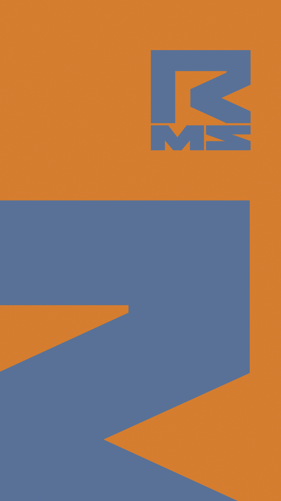
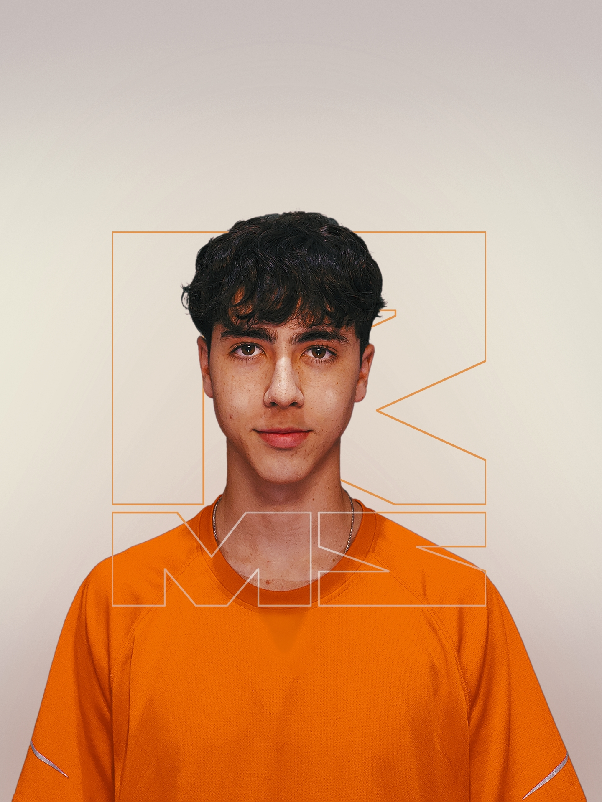

designer gráfico · sc, brasil
Design que
entra no jogo.
Eu estudo o universo de cada marca para criar peças que se adaptam ao que ela precisa dizer, sem perder cuidado com cada detalhe.

e design gráfico

Eu entro no universo de cada projeto antes de decidir como ele vai aparecer.
Detalhista na entrega.
trabalhos selecionados
Escolha uma frente.
Veja alguns trabalhos.
Em vez de um mural aleatório, cada grupo abre uma seleção curta de peças e caminhos visuais.
As seleções vão crescer com novos projetos, mas sem transformar o portfólio em um depósito de arquivos.
meu jeito de criar
Eu entro para
entender.
Cada área tem um ritmo próprio. Eu começo entendendo o setor, o público e a visão da marca. Depois junto repertório, adaptação e meu jeito detalhista de construir.
- 01Mapear o terreno
Entendo objetivo, público, referências e o contexto em que a peça vai viver.
- 02Encontrar o caminho
Escolho uma direção visual que faça sentido para aquela marca, e não só para mim.
- 03Refinar até funcionar
Ajusto composição, informação e acabamento para a entrega ficar pronta para uso.
Posso entrar no projeto por diferentes portas.
- Identidade visual
- Artes para redes
- Campanhas
- Manipulação de imagem
- Peças promocionais
próximo projeto
Tem algo que
precisa comunicar?
Me conta o básico. Eu estudo o contexto, entendo o que você precisa e te respondo com um caminho possível para o projeto.